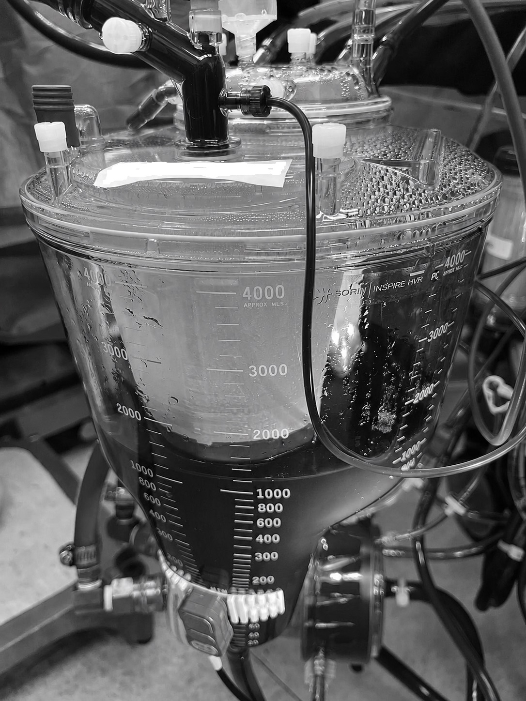
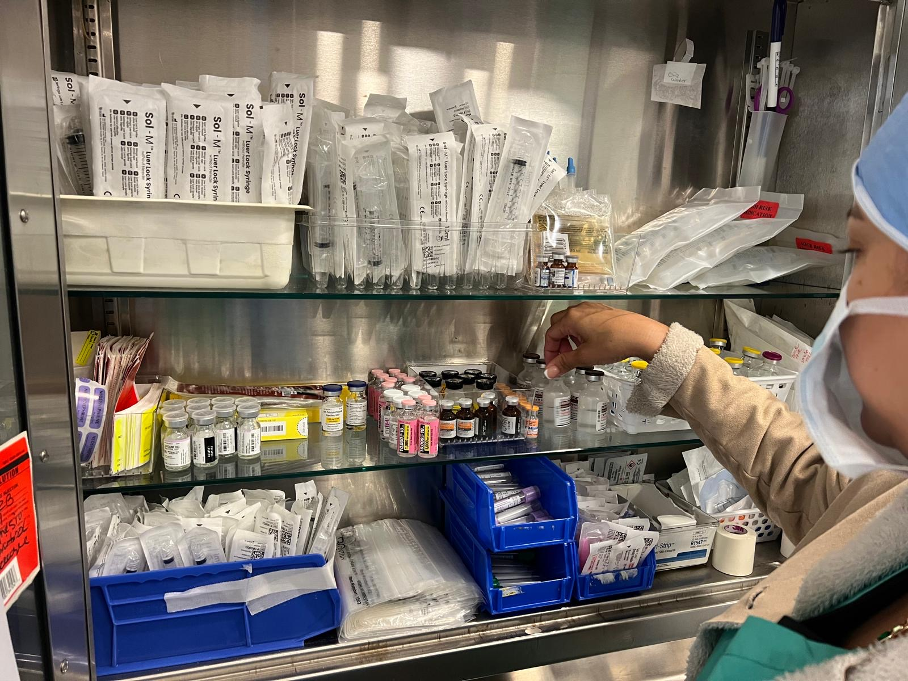
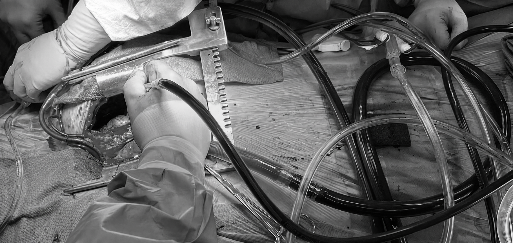
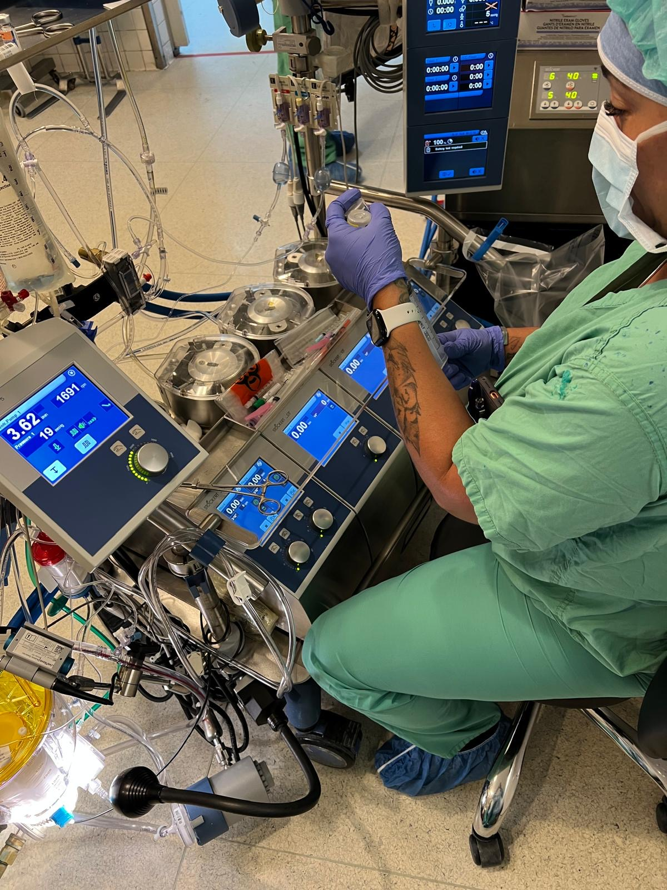
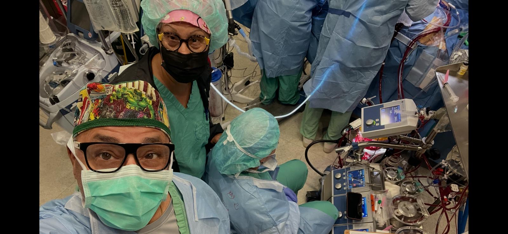

Academic excellence with patient safety at the center.
PRPA is dedicated to educating highly competent cardiovascular perfusion professionals through evidence-based medicine, simulation learning, and supervised clinical practice.
Mission
Educate and train competent cardiovascular perfusion professionals while advancing patient safety, professional integrity, and innovation in cardiovascular care.
Vision
Become the premier cardiovascular perfusion education program in Puerto Rico and the Caribbean, producing leaders in clinical practice, education, research, and patient care.
Training environment
A modern visual gallery designed to highlight perfusion education, clinical exposure, and technology-based learning.





Built for real clinical readiness.
Concurrent Learning
Academic courses and clinical rotations run together to connect classroom knowledge with real procedures.
Certification Path
Graduates will be prepared to enter the certification process with the American Board of Cardiovascular Perfusion.
Career Paths
Cardiovascular perfusion, ECMO specialist roles, blood management, plasma exchange, research, and medical device industry positions.